Proyectos Académicos
- ETSAV
- UPV
Proyectos desarrollados a lo largo de la carrera de Arquitectura en la Universidad Politécnica de Valencia.
 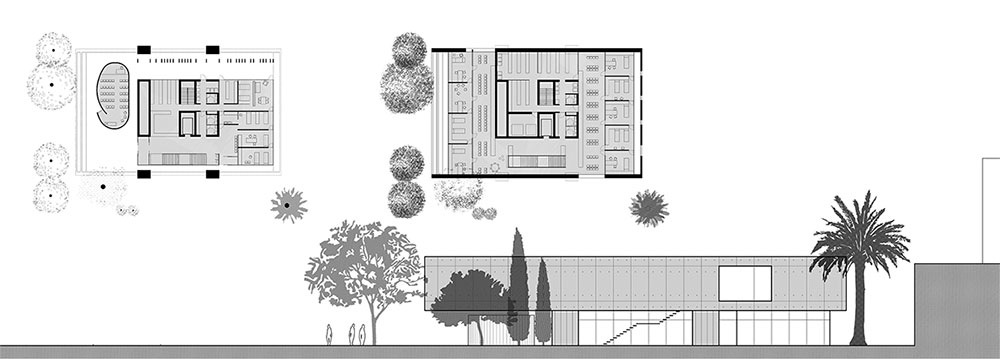
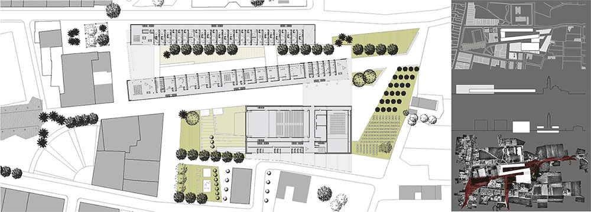
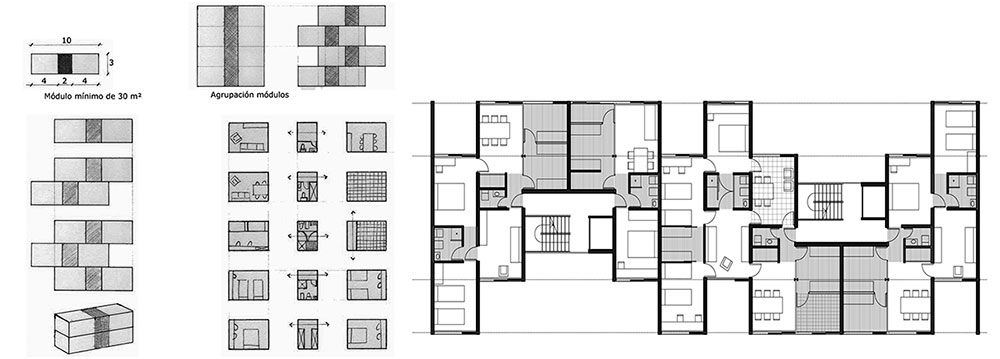
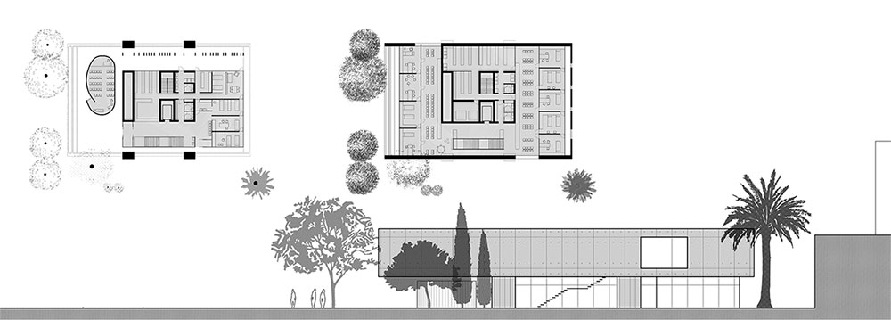
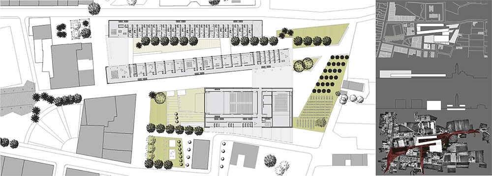
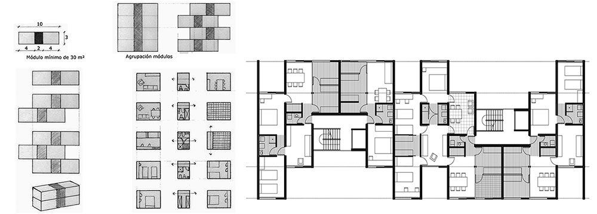
 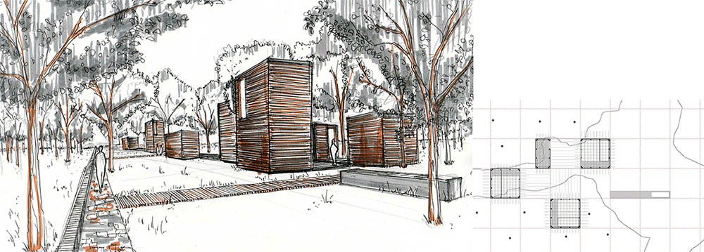
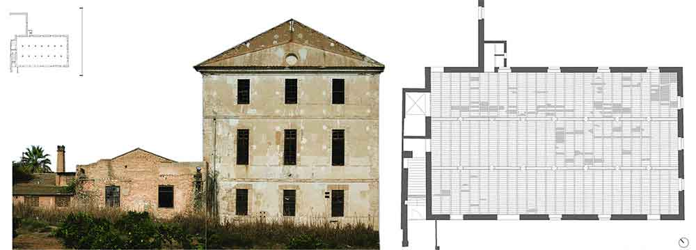
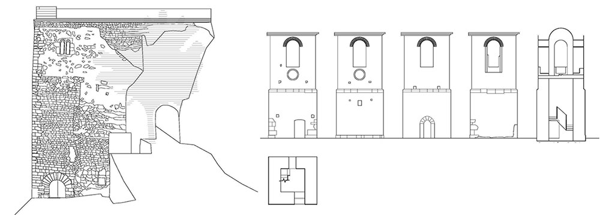
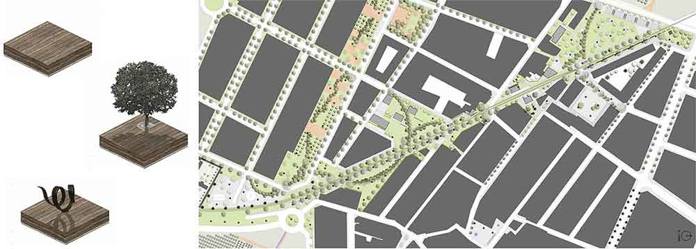
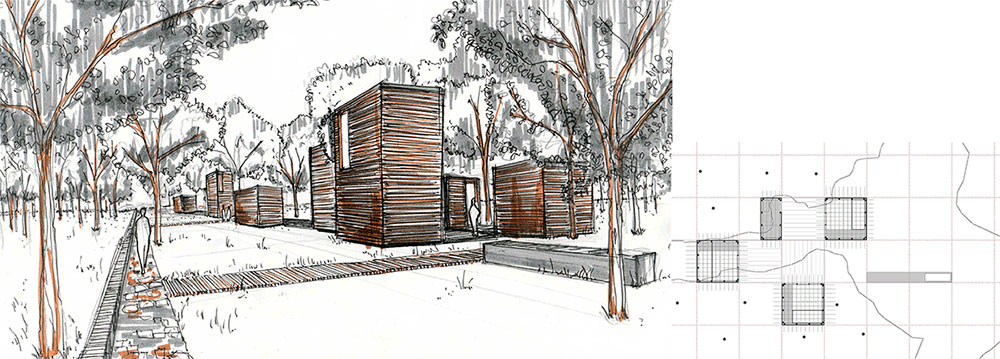
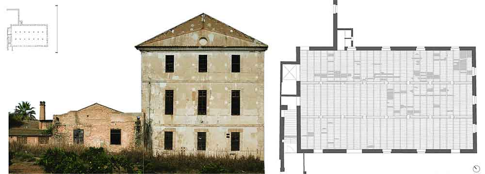
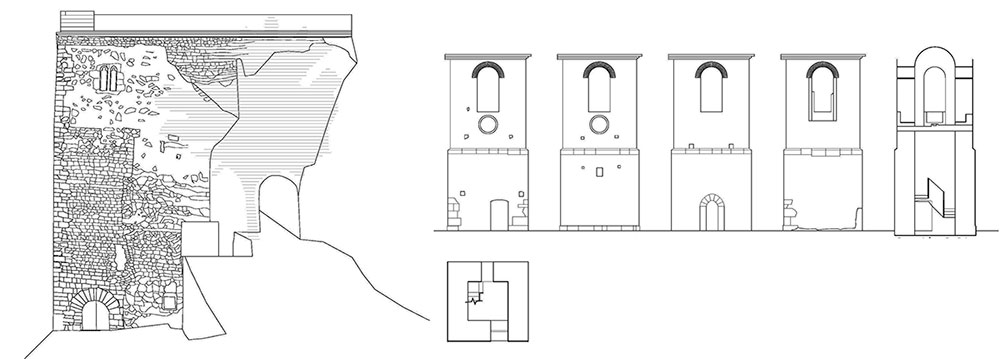
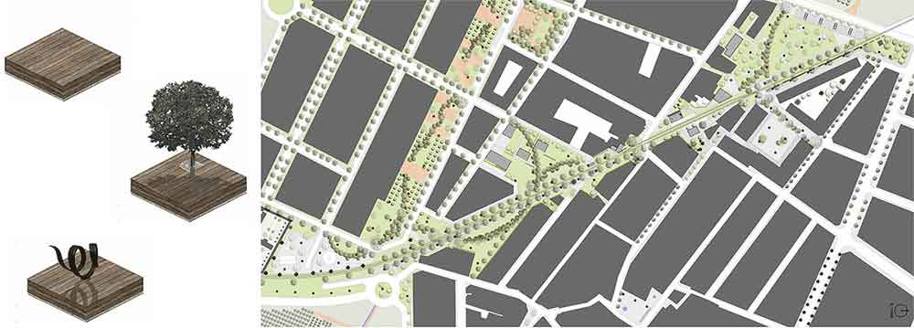
Edición de video para la asignatura Urbanismo y Medio Ambiente. Proyecto y video expuestos en el Colegio Territorial de Arquitectos de Valencia.
Urbanismo y Medio Ambiente_EntrePuntos_ETSAV 2012 from jose balmon on Vimeo.


 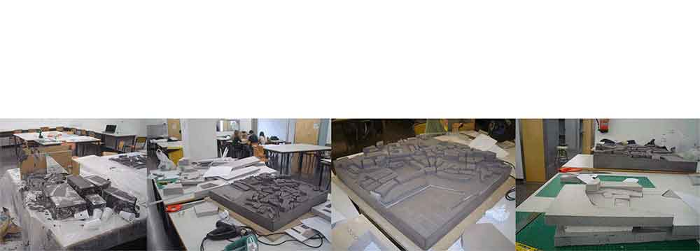
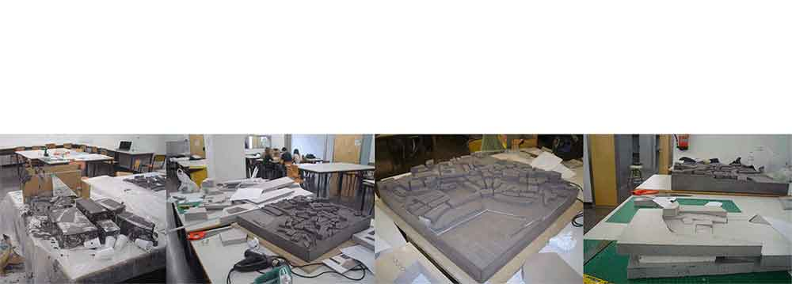